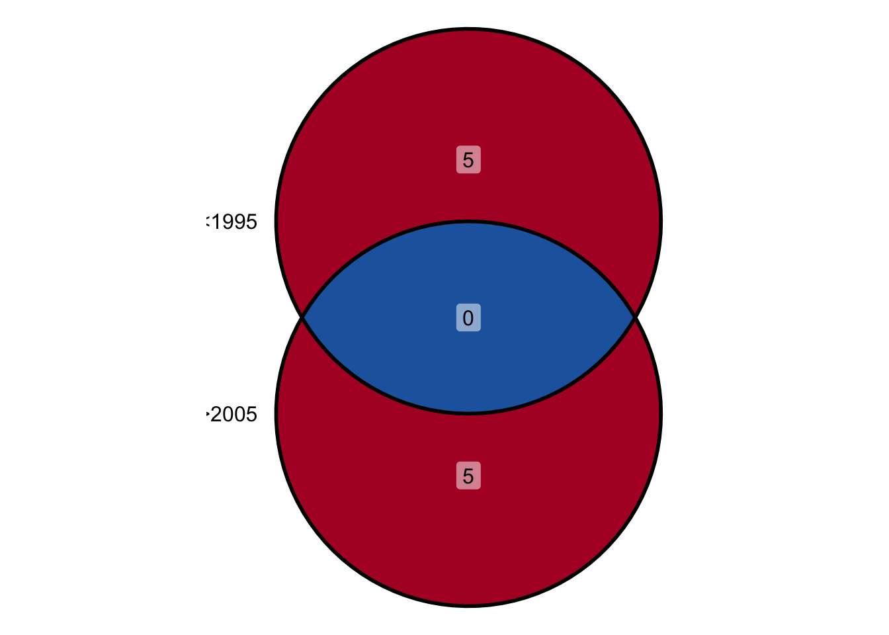
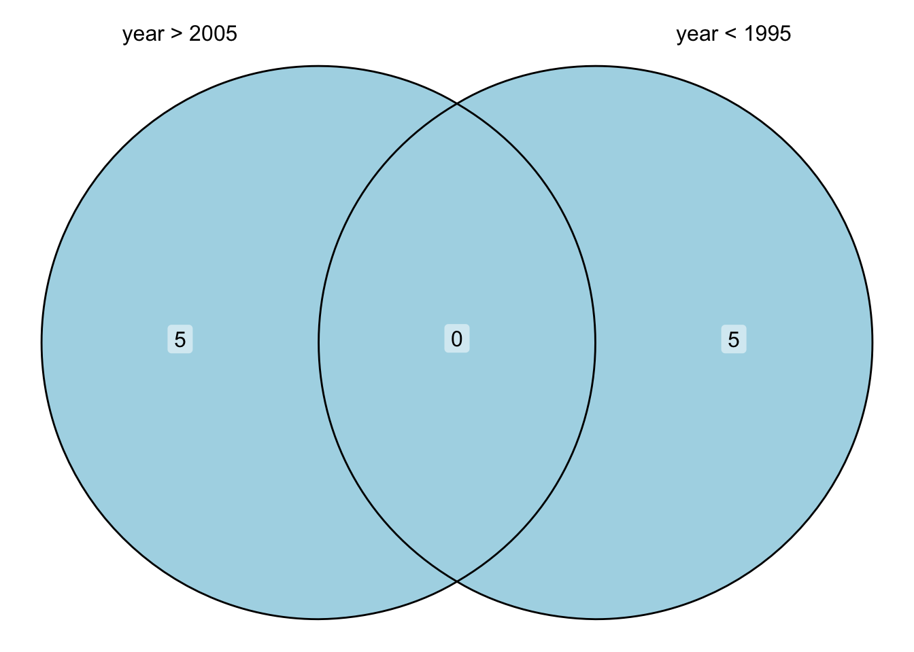

year <- 2000
year == 2000[1] TRUEyear == 2001[1] FALSE今回は比較演算子の使い方を学びます。 比較演算ができるようになれば，条件分岐と繰り返し処理の理解が進みます。
比較演算とは比較演算子を使った判定のことです。 数値の比較はみなさんが日常的に行ってことですので，分かりやすいはずです。
比較演算子の1つに == があります。
year <- 2000
year == 2000[1] TRUEyear == 2001[1] FALSE= は必ず2つ連続で使用します。 = を1つしか使わない場合，関数の引数以外では，<- と同じ意味になってしまいますので，注意が必要です。 上のコマンドは，== の左側と右側が等しいかどうかを判定しています。 比較演算の返り値は論理値です。
また，ベクトルを比較演算子の左側に置いた場合，返り値は左側のベクトルと同じ長さのベクトルになります。
year <- 1990:2010
year == 2000 [1] FALSE FALSE FALSE FALSE FALSE FALSE FALSE FALSE FALSE FALSE TRUE FALSE
[13] FALSE FALSE FALSE FALSE FALSE FALSE FALSE FALSE FALSElength(year)[1] 21length(year == 2000)[1] 21ベクトルの各要素を表示し，返り値との対応関係が正しいことを確かめてください。
year [1] 1990 1991 1992 1993 1994 1995 1996 1997 1998 1999 2000 2001 2002 2003 2004
[16] 2005 2006 2007 2008 2009 2010Rコンソールに表示されるベクトルが何行目で改行されるかは，そのベクトルによって異なります。 このため，2行目がベクトルの何番目であるかはそのベクトルに依存します。 左の [] 内に表示される数字がベクトルの何番目の要素であるかを示しています。
== のほかに，次のような比較演算子があります。 これらの比較演算は直感的に理解できるはずです。
year > 2000 [1] FALSE FALSE FALSE FALSE FALSE FALSE FALSE FALSE FALSE FALSE FALSE TRUE
[13] TRUE TRUE TRUE TRUE TRUE TRUE TRUE TRUE TRUEyear < 2000 [1] TRUE TRUE TRUE TRUE TRUE TRUE TRUE TRUE TRUE TRUE FALSE FALSE
[13] FALSE FALSE FALSE FALSE FALSE FALSE FALSE FALSE FALSEyear >= 2000 [1] FALSE FALSE FALSE FALSE FALSE FALSE FALSE FALSE FALSE FALSE TRUE TRUE
[13] TRUE TRUE TRUE TRUE TRUE TRUE TRUE TRUE TRUEyear <= 2000 [1] TRUE TRUE TRUE TRUE TRUE TRUE TRUE TRUE TRUE TRUE TRUE FALSE
[13] FALSE FALSE FALSE FALSE FALSE FALSE FALSE FALSE FALSE>= は => とするとエラーが返ってきます。 <= も同様に <= としてはいけません。 ここでもベクトルの返り値がベクトルであることに注意してください。
比較演算子の先頭に ! をつけることができます。 この ! は否定を意味します。 == の場合は，!= とすると == が真ではないものという意味になります。
year != 2000 [1] TRUE TRUE TRUE TRUE TRUE TRUE TRUE TRUE TRUE TRUE FALSE TRUE
[13] TRUE TRUE TRUE TRUE TRUE TRUE TRUE TRUE TRUE!= の返り値は， == のちょうど反対であることが分かるはずです。 なお，!>，!<，!>=，!<= は使えません。 > の否定は <= で表現できるため，これらのコマンドが使えなくてもとくに困りません。
比較演算は，ベクトルや行列の一部を取り出すときによく使います。 例えば，次のようにします。
year[year >= 2000] [1] 2000 2001 2002 2003 2004 2005 2006 2007 2008 2009 2010一見冗長な書き方のように見えますが，これで問題ありません。 [] の内側は論理値のベクトルであり，[] の外側（ year ）のベクトルと長さが同じ（または，外側が内側の整数倍）でなければなりません。 この場合は [] の外側と内側で同じ変数 year を使っているので，必ずベクトルの長さが同じになります。 [] 外側のベクトルに対して，内側のベクトルの長さが短い場合は，内側のベクトルを繰り返します。 例えば，次のようにすると，c(TRUE, FALSE, FALSE) は7回繰り返され，返り値は7つの要素を持つベクトルになります。
year[c(TRUE, FALSE, FALSE)][1] 1990 1993 1996 1999 2002 2005 2008これは，length(year) が 21 でり，これを length(c(TRUE, FALSE, FALSE)) の 3 で割ると，0.1428571 になるためです。 もしこの計算によって求められる数値（ここでは 7 ）が整数でなければ，エラーが返ってきます。 例えば，次の場合，エラーが返ってきます。
year[c(TRUE, FALSE, FALSE, FALSE)][1] 1990 1994 1998 2002 2006 2010これは，length(year) が 21 でり，これを length(c(TRUE, FALSE, FALSE, FALSE)) の 4 で割ると，0.1904762 になり，整数ではないためです。
[] の外側が内側の整数倍の長さのベクトルという性質を使うことはほとんどないため，このことを知らなくても困ることはほとんどないでしょう。 むしろ，ベクトルの長さが違っていてもエラーにならない可能性があることから，思わぬバグに気づかないかもしれません。
なお，次のようにもできますが，スクリプトの中でのこのような記述は無駄だということに注意してください。
year[year == 2000][1] 2000この場合，次のようにした場合と返り値が同じです。
2000[1] 2000返り値を関数の引数に入力してしまっています。 ただし，次のような場合は無駄ではありません。
year[year > 2000] [1] 2001 2002 2003 2004 2005 2006 2007 2008 2009 2010こうした比較演算は，実際には，次のような使い方をすることがよくあります。
y <- seq(5000, 5040, 2)
z <- data.frame(year = year, value = y)
mean(z[z$year > 2000, ]$value)[1] 5031最後の部分は次のようにしても同じです。
z$value[z$year > 2000] [1] 5022 5024 5026 5028 5030 5032 5034 5036 5038 5040このことがいまいちピンとこない人は，次のように分解して考えてみてください。
(zd1 <- z$year > 2000) [1] FALSE FALSE FALSE FALSE FALSE FALSE FALSE FALSE FALSE FALSE FALSE TRUE
[13] TRUE TRUE TRUE TRUE TRUE TRUE TRUE TRUE TRUE(zd2 <- z[zd1, ]) year value
12 2001 5022
13 2002 5024
14 2003 5026
15 2004 5028
16 2005 5030
17 2006 5032
18 2007 5034
19 2008 5036
20 2009 5038
21 2010 5040(zd3 <- zd2$value) [1] 5022 5024 5026 5028 5030 5032 5034 5036 5038 5040mean(zd3)[1] 5031これまでの説明で，返り値が論理値であることが混乱を招く原因になっているかもしれません。 しかし，これは R の便利な特徴のひとつですので，必ず理解してください。 もしかしたら，判定が真となる要素がベクトルの何番目の要素であるかを返す関数 which() の方が理解が容易でしょうか。
which(year >= 2000) [1] 11 12 13 14 15 16 17 18 19 20 21このため，次のようにすることができます。
(zd <- which(z$year >= 2000)) [1] 11 12 13 14 15 16 17 18 19 20 21z$value[zd] [1] 5020 5022 5024 5026 5028 5030 5032 5034 5036 5038 5040ただし，これは次のようにすることと同じです。
z$value[z$year >= 2000] [1] 5020 5022 5024 5026 5028 5030 5032 5034 5036 5038 5040返り値と関数の引数は異なります。 このように，ベクトルを取り出すとき，何番目であるかを指定する方法と，論理値で指定する方法の2つがあることを知っておいてください。 今後自分でコードを書くとき，このことが混乱の原因になるかもしれません。 もし混乱した場合は，そのとき扱っている変数が数値なのか論理値なのかを考えると，頭の中が整理されるはずです。
NAベクトルに NA が含まれるとき，NA のある場所では評価（比較演算）しません。
x <- sample(10, 10)
x[sample(10, 1)] <- NA
x > 5 [1] FALSE TRUE FALSE NA FALSE TRUE FALSE TRUE TRUE FALSEx[x > 5][1] 6 NA 7 10 9NA を取り除きたい場合は，条件をもう1つ追加しなければなりません。 NA かどうかは次の関数で判定します。
is.na(x) [1] FALSE FALSE FALSE TRUE FALSE FALSE FALSE FALSE FALSE FALSE実践では，NA 以外を取り出したい場合は，否定の ! が使えます。
!is.na(x) [1] TRUE TRUE TRUE FALSE TRUE TRUE TRUE TRUE TRUE TRUENA を取り除くと，ベクトルの要素の数が減ることに注意してください。
length(x[!is.na(x)])[1] 9length(x)[1] 10このベクトルがデータフレームから取り出したものである場合，そのデータフレームに NA を取り除いたベクトルを戻すことはできません。 行の対応関係が崩れるため当然ですが，勘違いしやすいので注意してください。 NA が含まれる計算結果は NA となるため，NA を取り除きたくなるかもしれません。
sum(x)[1] NAこの場合，関数の引数に na.rm = TRUE を入れて，一時的に NA を取り除いて計算してください。
sum(x, na.rm = TRUE)[1] 47この場合，x[!is.na(x)] のように，ベクトルからわざわざ NA を取り除く必要はありません。
判定の際に NA を取り除きたい場合は，次のようにします。
x[!is.na(x) & x > 5][1] 6 7 10 9ここで，& は論理積と呼ばれるもので，英語の”and”，日本語の「かつ」という意味を持ち，判定の条件を増やすことを意味します。 NA に限らず，複数の比較演算を使いたい場合は，論理積 & を使います。 もっと単純な例としては，以下のようなものがあります。
year[year > 2000 & year < 2005][1] 2001 2002 2003 2004論理積は以下のベン図で表現できます。

一方，複数の比較演算のいずれかが真となるという条件式を書きたい場合は，論理和 | を使います。 例えば，次のようにします。
year[year > 2005 | year < 1995] [1] 1990 1991 1992 1993 1994 2006 2007 2008 2009 2010論理和は以下のベン図で表現できます。

文字列の比較演算子が使えます。 文字列の比較演算は次のようにします。
prefecture <- c("北海道", "青森県", "岩手県", "宮城県", "秋田県", "山形県", "福島県",
"茨城県", "栃木県", "群馬県", "埼玉県", "千葉県", "東京都", "神奈川県",
"新潟県", "富山県", "石川県", "福井県", "山梨県", "長野県", "岐阜県", "静岡県", "愛知県",
"三重県", "滋賀県", "京都府", "大阪府", "兵庫県", "奈良県", "和歌山県",
"鳥取県", "島根県", "岡山県", "広島県", "山口県", "徳島県", "香川県", "愛媛県", "高知県",
"福岡県", "佐賀県", "長崎県", "熊本県", "大分県", "宮崎県", "鹿児島県", "沖縄県")
prefecture == "愛媛県" [1] FALSE FALSE FALSE FALSE FALSE FALSE FALSE FALSE FALSE FALSE FALSE FALSE
[13] FALSE FALSE FALSE FALSE FALSE FALSE FALSE FALSE FALSE FALSE FALSE FALSE
[25] FALSE FALSE FALSE FALSE FALSE FALSE FALSE FALSE FALSE FALSE FALSE FALSE
[37] FALSE TRUE FALSE FALSE FALSE FALSE FALSE FALSE FALSE FALSE FALSE数値と同じく，文字列の返り値も論理値です。 文字列の場合，== は完全一致を意味します。
文字列の場合，大きさはないため，> や < といった比較演算子は使えないはずです。
prefecture[prefecture > "愛媛県"] [1] "北海道" "青森県" "岩手県" "宮城県" "秋田県" "山形県"
[7] "福島県" "茨城県" "栃木県" "群馬県" "埼玉県" "千葉県"
[13] "東京都" "神奈川県" "新潟県" "富山県" "石川県" "福井県"
[19] "山梨県" "長野県" "岐阜県" "静岡県" "三重県" "滋賀県"
[25] "京都府" "大阪府" "兵庫県" "奈良県" "和歌山県" "鳥取県"
[31] "島根県" "岡山県" "広島県" "山口県" "徳島県" "香川県"
[37] "高知県" "福岡県" "佐賀県" "長崎県" "熊本県" "大分県"
[43] "宮崎県" "鹿児島県" "沖縄県" prefecture[prefecture < "愛媛県"][1] "愛知県"予想に反して，エラーではなく返り値が得られます。 これは，各文字列の文字コードを比較しています。 このことは，次のコマンドでも確認できます。
factor(prefecture) [1] 北海道 青森県 岩手県 宮城県 秋田県 山形県 福島県 茨城県
[9] 栃木県 群馬県 埼玉県 千葉県 東京都 神奈川県 新潟県 富山県
[17] 石川県 福井県 山梨県 長野県 岐阜県 静岡県 愛知県 三重県
[25] 滋賀県 京都府 大阪府 兵庫県 奈良県 和歌山県 鳥取県 島根県
[33] 岡山県 広島県 山口県 徳島県 香川県 愛媛県 高知県 福岡県
[41] 佐賀県 長崎県 熊本県 大分県 宮崎県 鹿児島県 沖縄県
47 Levels: 愛知県 愛媛県 茨城県 岡山県 沖縄県 岩手県 岐阜県 宮崎県 ... 和歌山県Levels がおかしな並び順になっていることが確認できます。 こうした文字コードでの順序づけを回避するには，levels() を明示的に指定しなければなりません。
(prefecture_factor <- factor(prefecture, levels = prefecture, ordered = TRUE)) [1] 北海道 青森県 岩手県 宮城県 秋田県 山形県 福島県 茨城県
[9] 栃木県 群馬県 埼玉県 千葉県 東京都 神奈川県 新潟県 富山県
[17] 石川県 福井県 山梨県 長野県 岐阜県 静岡県 愛知県 三重県
[25] 滋賀県 京都府 大阪府 兵庫県 奈良県 和歌山県 鳥取県 島根県
[33] 岡山県 広島県 山口県 徳島県 香川県 愛媛県 高知県 福岡県
[41] 佐賀県 長崎県 熊本県 大分県 宮崎県 鹿児島県 沖縄県
47 Levels: 北海道 < 青森県 < 岩手県 < 宮城県 < 秋田県 < 山形県 < ... < 沖縄県prefecture_factor[prefecture_factor > "愛媛県"][1] 高知県 福岡県 佐賀県 長崎県 熊本県 大分県 宮崎県 鹿児島県
[9] 沖縄県
47 Levels: 北海道 < 青森県 < 岩手県 < 宮城県 < 秋田県 < 山形県 < ... < 沖縄県このようなこともできますが，特別な理由がない限り，文字列の大小比較はしないでください。
さて，文字列のベクトルの中から共通する要素を取り出したいことがあるかもしれません。 例えば，都道府県の中から県のみを取り出したいときに，次のようにしても得たい結果は得られません。
prefecture[prefecture == "県"]character(0)上述のように，== は完全一致を意味するからです。 このとき，次のようにします。
prefecture[grep("県", prefecture)] [1] "青森県" "岩手県" "宮城県" "秋田県" "山形県" "福島県"
[7] "茨城県" "栃木県" "群馬県" "埼玉県" "千葉県" "神奈川県"
[13] "新潟県" "富山県" "石川県" "福井県" "山梨県" "長野県"
[19] "岐阜県" "静岡県" "愛知県" "三重県" "滋賀県" "兵庫県"
[25] "奈良県" "和歌山県" "鳥取県" "島根県" "岡山県" "広島県"
[31] "山口県" "徳島県" "香川県" "愛媛県" "高知県" "福岡県"
[37] "佐賀県" "長崎県" "熊本県" "大分県" "宮崎県" "鹿児島県"
[43] "沖縄県" これは正規表現を使った抽出です。 このコマンドはやや冗長で，本来なら次のようにすべきです。
grep("県", prefecture, value = TRUE) [1] "青森県" "岩手県" "宮城県" "秋田県" "山形県" "福島県"
[7] "茨城県" "栃木県" "群馬県" "埼玉県" "千葉県" "神奈川県"
[13] "新潟県" "富山県" "石川県" "福井県" "山梨県" "長野県"
[19] "岐阜県" "静岡県" "愛知県" "三重県" "滋賀県" "兵庫県"
[25] "奈良県" "和歌山県" "鳥取県" "島根県" "岡山県" "広島県"
[31] "山口県" "徳島県" "香川県" "愛媛県" "高知県" "福岡県"
[37] "佐賀県" "長崎県" "熊本県" "大分県" "宮崎県" "鹿児島県"
[43] "沖縄県" grep は正規表現を使った処理ができる関数のひとつです。 ただし，正規表現の理解は初学者には難しいでしょう。
正規表現を知っているかどうかで，比較演算子の効率的な使い方が飛躍的に向上します。 正規表現は，人間が考えるかのようにコンピュータに考えさせる記述方法です。 しかし，非常にややこしいのでここでは説明しません。 以下のWebページを確認してください。
条件分岐とは，「もし〜ならば」という条件「〜」を満たす場合に，指定の処理をする手続きのことです。
x <- 1
if (x == 1) {
print("正解です。")
}[1] "正解です。"このように，if と () の間にスペースを入れます。 また，{} の前後は改行し，{} の中は左にインデントを付けるようにしてください。 インデントは，スペース2つが一般的です（スペースを4つ付ける人もいます）。
if 文は，「そうでなければ」ということを意味する else を伴うこともできます。
x <- 1
if (x == 1) {
print("正解です。")
} else {
print("不正解です。")
}[1] "正解です。"x <- sample(1:5)
if (x[1] == 1) {
print("正解です。")
} else {
print("不正解です。")
}[1] "不正解です。"if 文の () の中は，長さ1のベクトル（つまり，スカラー）かつ論理値でなければなりません。 すなわち，if 文の () の中は TRUE か FALSE です。 もしベクトルの要素1つずつ処理したい場合は，次に説明する繰り返し処理と組み合わせて使います。
x <- 1
for (i in 1:10) {
x <- x + 1
}
x[1] 11このように，for と () の間にスペースを入れます。 また，for 文と同じように，{} の前後は改行し，{} の中は左にインデントを付けるようにしてください。
for 文を使うときは，必ずループから抜け出せるようにしてください。 例えば，for の引数に {} の中で代入した場合，無限ループになることがあります。
繰り返し処理には，for 文意外に while 文もあります。
よく使う関数
table()
unique()
apply()論理式での数値は，0 のみが FALSE として扱われ，それ以外は TRUE として扱われます。
as.logical(1)[1] TRUEas.logical(0)[1] FALSE関数を自分で作ることができます。
x <- function (y) {
paste(y, collapse = "/")
}
x(c("Apple", "Orange"))[1] "Apple/Orange"ポケモンの中から，water タイプのポケモンをすべて挙げなさい。 ただし，ポケモンのデータセットは，d3po パッケージの pokemon を使いなさい。 なお，pokemon は tibble ですが，データフレームに使えるコマンドのほとんどはそのまま使えます。
「北海道」「青森」…「東京都」…といった都道府県のデータがあります。北海道には「道」の文字が付いていますが，都府県には「都」「府」「県」の文字が付いていません。そこで，都府県にも「都府県」を付けて，すべてのデータが「都道府県」で終わるように揃えたいとします。ただし，データの中には47都道府県がすべて含まれているかどうか，重複があるかどうかは分かりません。すべてのデータが「都道府県」で終わるように揃えなさい。